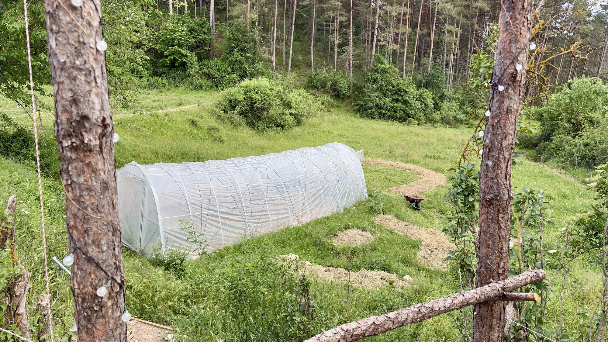

El projecte
No volíem fer un negoci. Volíem tornar a omplir una casa de gent, de feina i de vida.
Qui som
Creiem en un món rural viu, on les cases tornin a omplir-se de gent i de projectes. Per això vam agafar una antiga rectoria mig adormida i ens vam proposar despertar-la, a poc a poc, amb les mans.
Volem que Cal Niu sigui un lloc on aprendre sigui pràctic, on l'economia sigui justa i on la natura estigui al centre de tot. I, sobretot, un lloc on et sentis com a casa des del primer dia.
Vine a fer-ho possibleAllò que ens mou
Permacultura, agroecologia i respecte pels cicles naturals. Deixar el lloc millor que com l'hem trobat.
Un espai obert per compartir coneixement, feina i vida. Ningú sobra; tothom suma.
Tallers pràctics de bioconstrucció i oficis del camp. S'aprèn amb les mans i amb el cor.
Hi caps
Hi ha lloc per a tothom qui vulgui aportar i aprendre. Escriu-nos i t'expliquem com.
Participa-hi